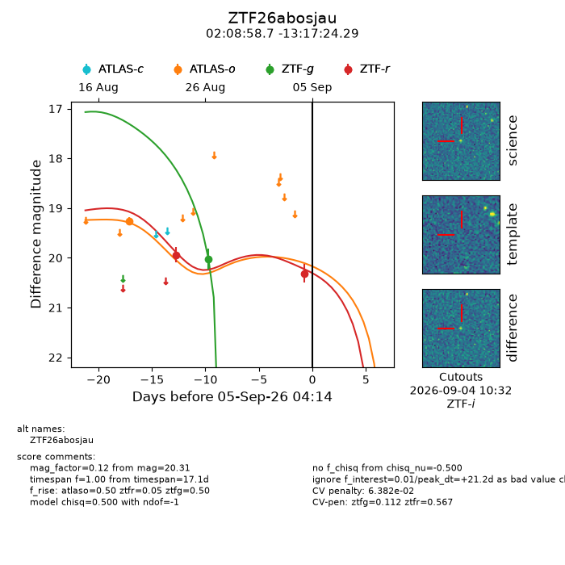
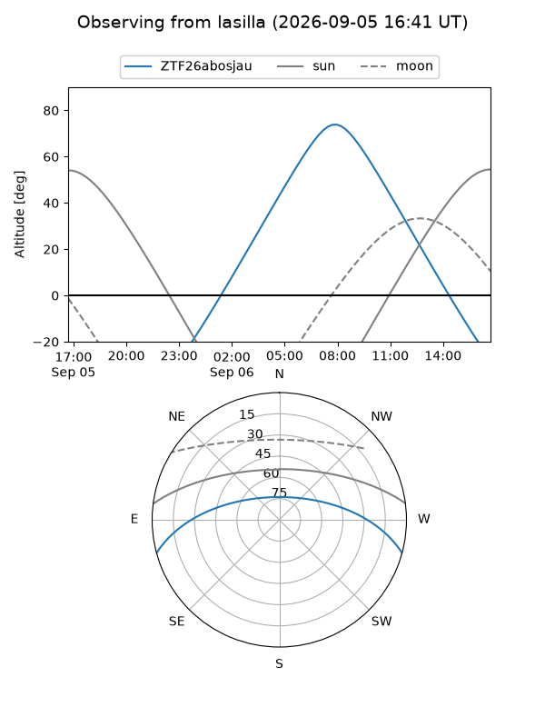
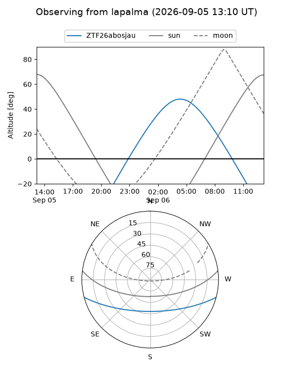
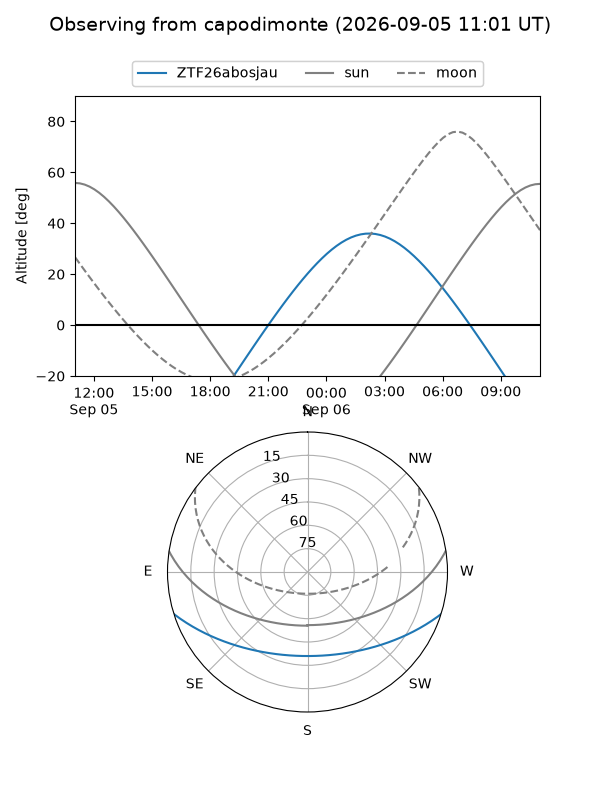
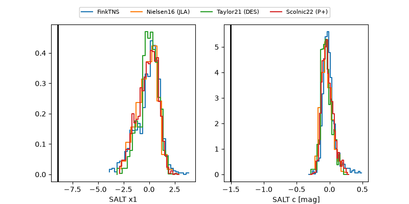

ZTF26abosjau
Target ZTF26abosjau at 2026-09-05 16:16
Aliases and brokers:
FINK-ZTF: ztf.fink-portal.org/ZTF26abosjau
Lasair-ZTF: lasair-ztf.lsst.ac.uk/objects/ZTF26abosjau
ALeRCE-ZTF: alerce.online/object/ZTF26abosjau
Direct TNS query: direct search
alt names
ZTF26abosjau (ztf,fink_ztf)
Coordinates:
equatorial (ra, dec) = 32.2447,-13.29008
equatorial (HMS+DMS) = 02:08:58.73,-13:17:24.29
galactic (l, b) = (179.4055,-67.20124)
Flags:
peak dt: +21.7
likely cv: !!
Photometry:
last atlaso=19.26, ztfg=20.02, ztfr=20.31
1 atlaso, 1 ztfg, 2 ztfr detections
Lightcurve

Visibility



Additional plots
